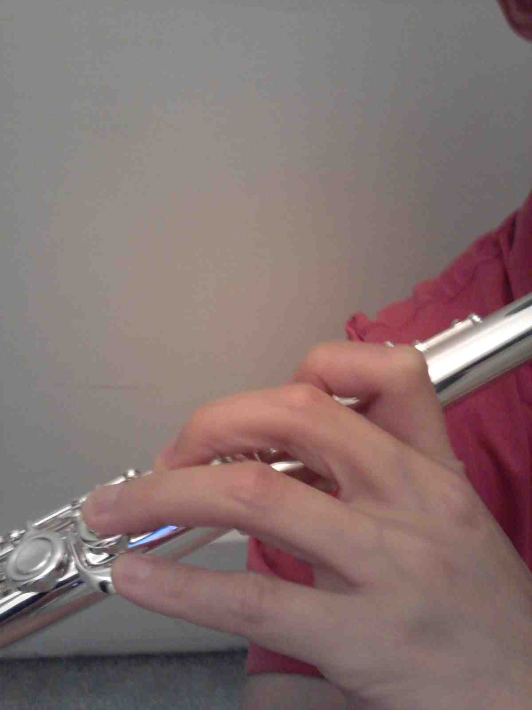

Today Abby and I went to another intimidating potluck/jam session, this time hosted by Mimi Jong and Susan Wagner. Mimi had invited Abby, but hadn’t yet met me; I knew who she was through having been to an Appalasia performance with Abby at some point earlier.
This time I played a little bit. I almost didn’t, but felt that I had to start with something.
Yesterday at work I saw a lot of setup going on out on the lawn:
CFA lawn being set up for Obama
Anyway, today I stayed at home. Why did I stay at home when I could have picked up a free ticket yesterday for this event? (Below is a photo of someone else’s ticket since I did not get one.)
Today Abby and I went to a very different one, a potluck/music jam hosted by Susan Waggoner, whom we’ve known for a long time through various Pittsburgh music and dance activities. Susan is involved particularly in the Cajun music/dance scene, and was also in the Accordion Pool Party that Abby played in three years ago, and also has been doing French dancing with us.
I was so terrified at this party that I didn’t play at all, despite bringing my instruments. I just didn’t feel up to it. But I learned a lot.
Tonight I participated for the first time in a new local French traditional dance music jam session that is getting off the ground, organized by Lisa. I was really excited about the formation of our group.
Today, I finally entered Google Pittsburgh’s office in Bakery Square as a visitor for the first time, thanks to being told by a friend about an event called “Google I/O Extended: Pittsburgh”, which he sent me an invitation to. I decided to attend, out of curiosity.
Because I enjoyed that experience so much, since then, I have walked to/from work at least once a week! Usually my route has included either Forbes Avenue or Schenley Drive, but once I went on other roads through Schenley Park.
Last week I started making the trails of Schenley Park part of my walk. This adds probably half a mile to the walk (for a total of just less than 2.5 miles from home to work); time efficiency was why I had not taken this indirect route before.
I finally got my “Statement of Accomplishment” for the Coursera course “Model Thinking”, which lasted for four months, starting in February, taught by Scott Page of the University of Michigan.
Recently I started eating ice cream for breakfast. I was amused because this was something I haven’t done since I was a child, when my sister and I managed for a while to convince our parents to let us eat ice cream for breakfast.
Is there a contradiction between my eating ice cream for breakfast and my supposedly paying attention to my health?
I am definitely enjoying the new flute. In particular, as I’ve been practicing an Allegro movement of a solo flute sonata, the fast passages involving a G# are painful and awkward on my old flute that has an inline G instead of an offset G. The offset G eases the reach for my short ring and pinkie fingers. As you can see from the photo, my left pinkie finger in particular is so short that even with the offset G it is almost completely straight! (And this is with my proper placement of the flute somewhat down and forward from the body to minimize the twist of the entire left hand.)

Franklin's left hand on flute with offset G
(The split E also helps a lot right now, giving me a clean E much more easily than my old flute, but this has nothing to do with ergonomics.)
First solo flute performance
The big news is that I’m preparing to perform solo on flute on Sunday for the first time in my life. This after having really played flute only for half a year. Yes, I’m nervous, of course. But I volunteered to do this. Why?